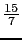
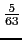
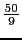

suivant: Le PGCD : Gcd
monter: Les entiers (et les
précédent: La factorielle : factorial
Table des matières
Index
Le PGCD : gcd igcd
gcd ou igcd désigne le PGCD de deux (ou de plusieurs)
entiers ou rationnels (pour les polynômes voir alors 6.26.7).
On tape :
gcd(18,15)
ou
igcd(18,15)
On obtient :
3
On tape :
igcd(15/7,50/9)
ou
gcd(15/7,50/9)
On obtient :
5/63
en effet
 = 27 et
 = 70.
On tape :
gcd(18,15,21,36)
ou
igcd(18,15,21,36)
On obtient :
3
On tape :
gcd([18,15,21,36])
On obtient :
3
On peut aussi mettre comme paramètres deux listes de même longueur (ou une
matrice ayant 2 lignes), dans ce
cas gcd renvoie le PGCD des éléments de même indice (ou d'une
même colonne).
On tape :
gcd([6,10,12],[21,5,8])
Ou on tape :
gcd([[6,10,12],[21,5,8]])
On obtient :
[3,5,4]
On peut aussi utiliser la librairie Pari qui a une fonction gcd plus
générale car pari("gcd",x,y) fonctionne aussi lorsque x et y
sont rationnels et aussi lorsque x et y sont des listes ou des matrices qui
n'ont pas forcément la même dimension (c'est alors le type de y qui donne
le type du résultat.
On tape :
pari("gcd",5/7,50/9)
On obtient :
5/63
car
= 9* et
= 70*
On tape :
pari("gcd", [4,3],[20,30,50,75]))
On obtient une matrice A de dimension 4×2, c'est aussi une liste de
même longueur que y i.e. de longueur 4:
[[4,1],[2,3],[2,1],[1,3]]
car gcd(4, 20) = 4, gcd(3, 20) = 1, gcd(4, 30) = 2, gcd(3, 30) = 3...
Pour obtenir ce résultat avec Xcas, on doit taper 2 instructions :
gcd( [4,4,4,4],[20,30,50,75])
On obtient la première colonne de A:
[4,2,2,1]
et on tape
gcd( [3,3,3,3],[20,30,50,75])
On obtient la deuxième colonne de A :
[1,3,1,3]
:
On tape :
diag(pari("gcd", [5,4,3,2],[20,30,50,75])))
ou on tape :
gcd([5,4,3,2],[20,30,50,75])
On obtient :
[5,2,1,1]
Un exemple
Déterminer le pgcd de 4n + 1 et de 5n + 3 quand
n 
 .
.
On définit :
f(n):=gcd(4*n+1,5*n+3)
Puis on tape le programme essai(n) qui renvoie pour j = - n à n la
liste des valeurs de j, a lorsque le pgcd de 4j + 1 et 5j + 3 est égal à
a  1 :
1 :
essai(n):={
local j,a,L;
L:=NULL;
for (j:=-n;j<n;j++) {
a:=f(j);
if (a!=1) {
L:=L,[j,a];
}
}
return L;
}
Puis on tape :
essai(20)
On obtient :
[-16,7],[-9,7],[-2,7],[5,7],[12,7],[19,7]
On voit donc que 4n + 1 et 5n + 3 sont soit premiers entre eux soit leur pgcd
vaut 7 lorsque
n [- 16, - 9, - 2, 5, 12, 19] c'est à dire lorsque n = 5 + k*7.
On doit donc montrer que :
si n! = 5 + k*7 pour
k  , 4n + 1 et 5n + 3 sont premiers entre eux,
et
, 4n + 1 et 5n + 3 sont premiers entre eux,
et
si n = 5 + k*7 pour
k , 4n + 1 et 5n + 3 ont 7 comme pgcd.
suivant: Le PGCD : Gcd
monter: Les entiers (et les
précédent: La factorielle : factorial
Table des matières
Index
Documentation de giac écrite par Renée De Graeve